TREPPENWITZ
Propositions de 3 affiches typographiques sur le mot Treppenwitz, qui signifie "La blague qui nous vient dans l'escalier: on a rencontré quelqu'un qui nous plaît, on n'a rien trouvé à lui dire, on est déjà dans l'escalier, et là, la blague nous vient". J'ai eu envie de jouer à l'échelle des lettres : sur la première affiche, elles semblent descendre les escaliers de façon irrégulière, comme si elles se laissaient tomber. La deuxième explore plus le côté enfermé, pris au piège, de la réalité («j’aurais dû» et de «si j’avais»). Pour la dernière, j'ai voulu explorer la rapidité des échanges et des actions: l'affiche a eu le temps de vivre, et tel un générique, la typographie est déjà en bas de la feuille.
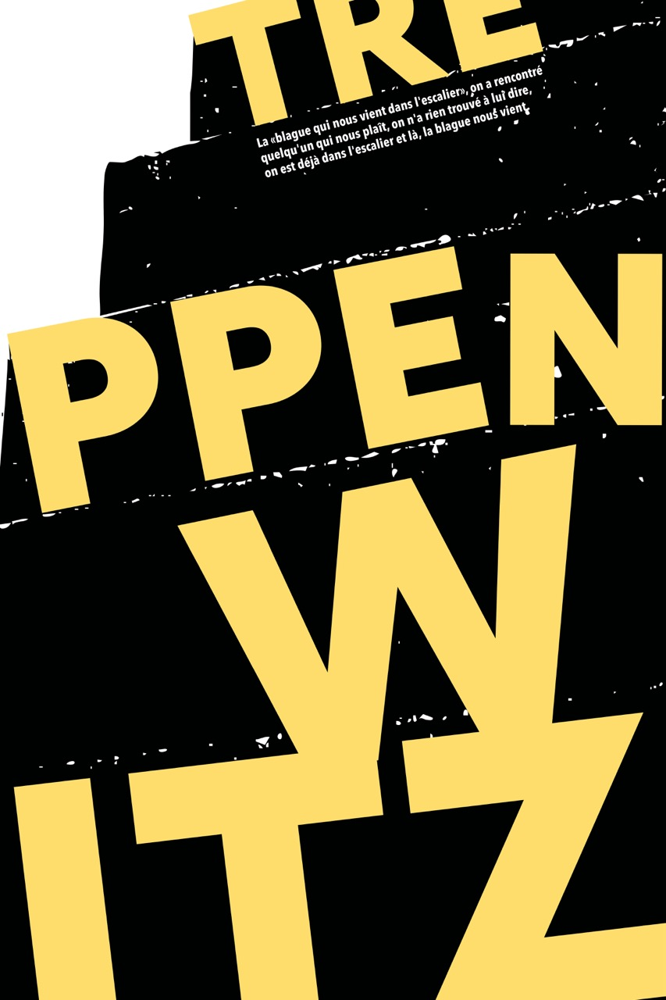
 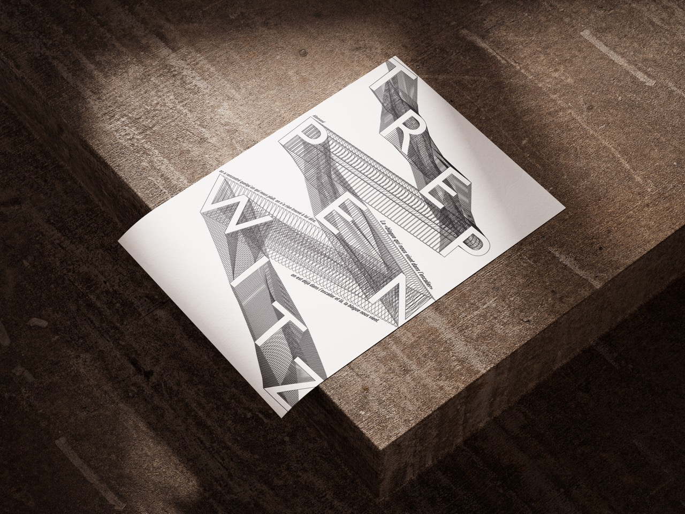
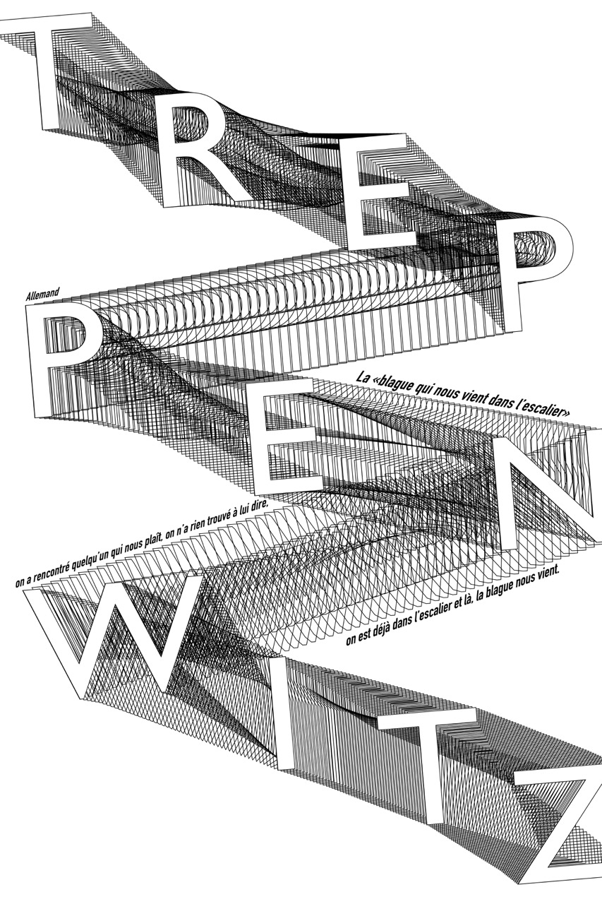
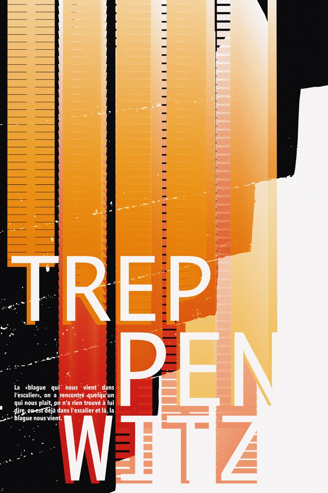
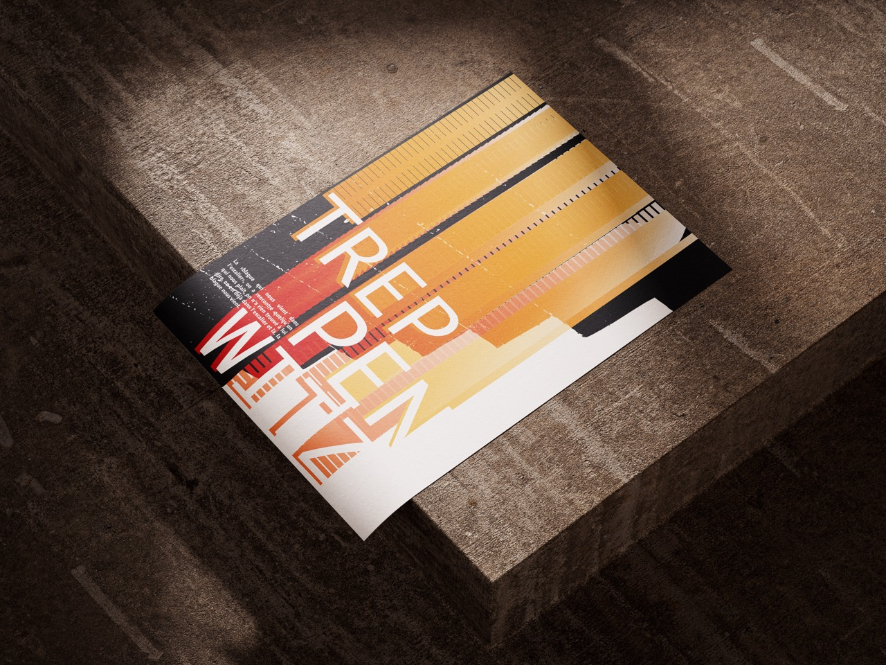
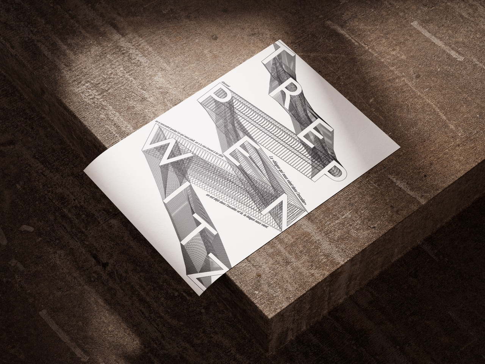
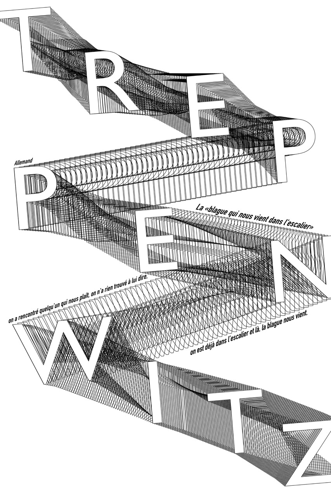
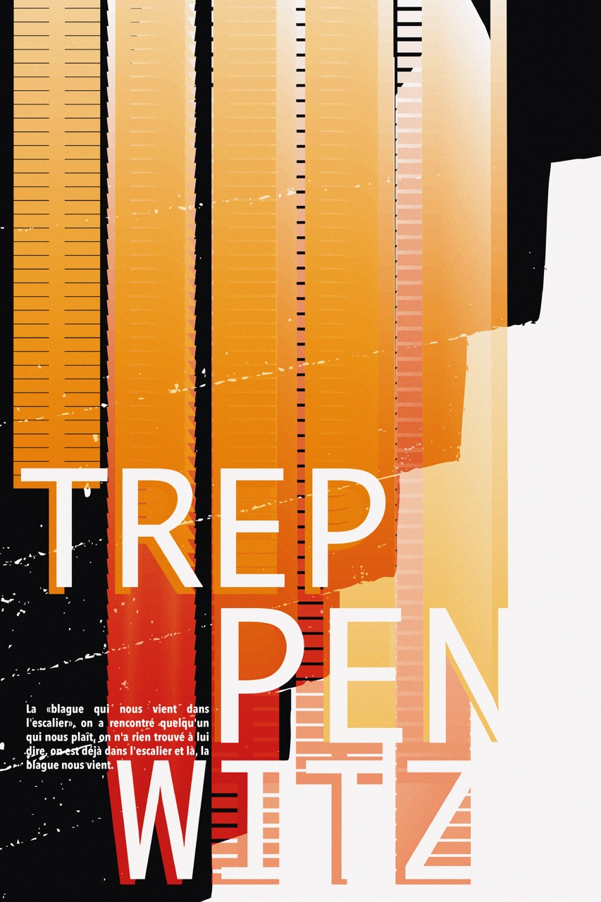
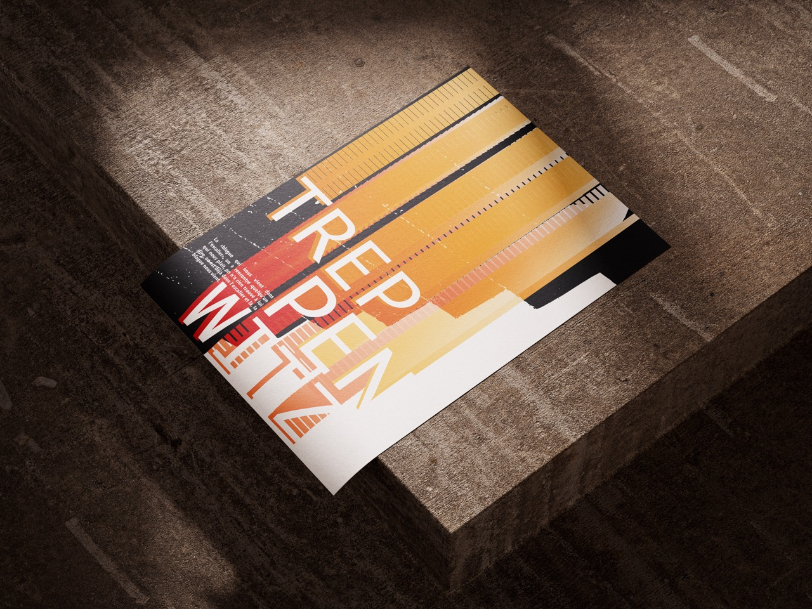
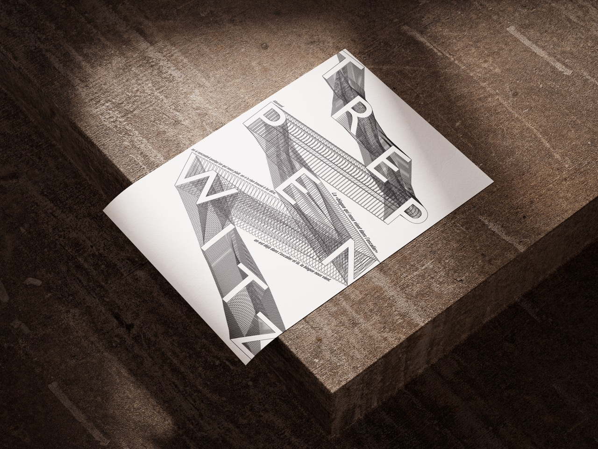
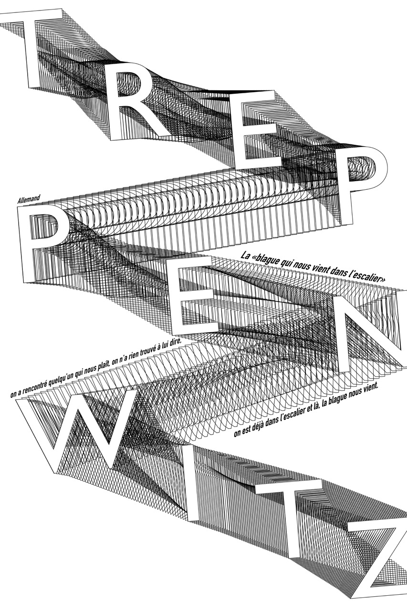
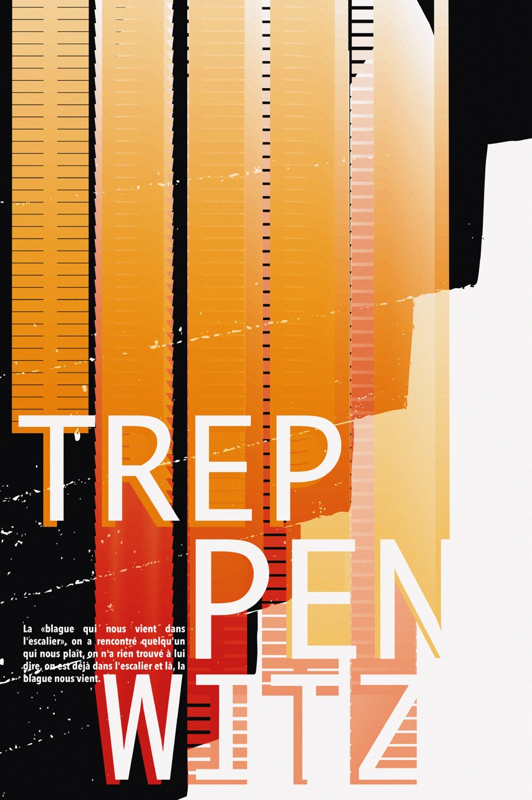
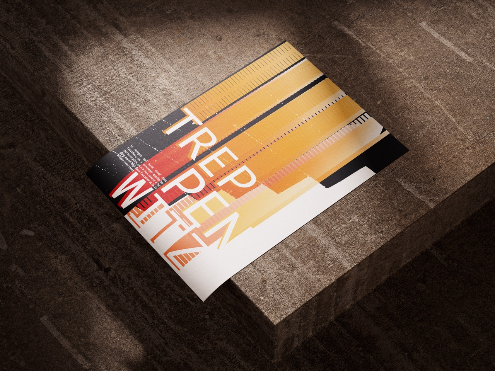
×